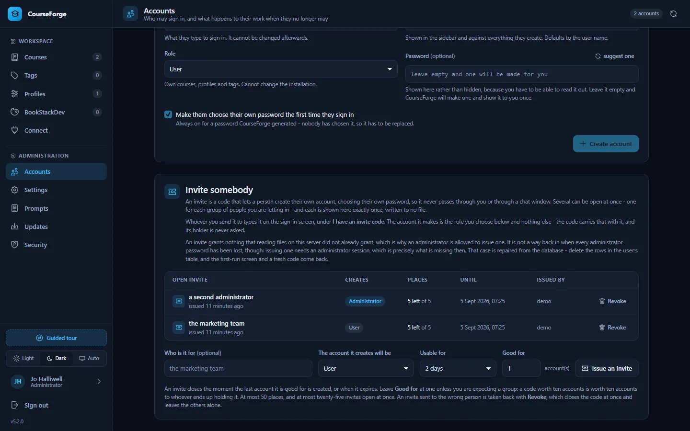

Administer
Accounts and roles
The first administrator, invites, the two roles, who owns what, deleting an account, handing a course to somebody else, and the audit log.
CourseForge has real accounts, stored in its database, with two roles: user and administrator. They are all managed from Administration › Accounts.


The first administrator#
A fresh installation has no accounts. Its setup screen asks for the code in INVITE-CODE.txt - a file CourseForge writes next to index.html, or into data/ when the install root is not writable - and creates the first administrator from it. See Installation for why that is enough.
- Only the hash is stored. The plain code exists in that file and nowhere else.
- It is spent on use. The file is deleted the moment the account is created.
- The door closes for good. Once any account exists, setup reports
needs_setup: falseand refuses to create anything. - It can be taken back. Revoke beside the open invite closes it and deletes its file.
On Apache the shipped .htaccess refuses every .txt file, so the code cannot be downloaded even while it sits in the document root. nginx, Caddy and IIS ignore .htaccess: on those, configure the server first (Security) or move the data directory out of the web root.
If every administrator password is lost, recover from the database: delete the rows in users, and the setup screen and a fresh code come back.
Adding people#
There are two ways, and they differ in who ends up knowing the password:
| How it works | Use it when | |
|---|---|---|
| Create an account | You set a password, or leave it blank and CourseForge generates one. It is shown once, and the account must choose its own at first sign-in. | You hand somebody an account face to face. |
| Issue an invite | A code shown once, with a label (who it is for), a role, an expiry (48 hours by default, 30 days at most) and a number of places. The holder creates their own account with it. | You would rather not send a password over chat. |
Several invites can be open at once - up to twenty-five - each with its own Revoke. Revoking one closes it immediately, wherever the code has been sent, and leaves accounts already created with it and the other invites alone. An invite worth more than one account (Good for, up to fifty) lets a whole group in with one code; raise it only for a group you are expecting, because the code is worth that many accounts to whoever holds it.
A password needs at least ten characters and is stored with PHP's password_hash(), rehashed on sign-in whenever PHP's default cost moves. A user name may hold letters, digits, spaces and . _ @ + -, starts with a letter or digit, and can never change.
Sign-in is throttled per account and per address: five failures inside fifteen minutes lock that address out for fifteen minutes (all three numbers are under Settings › Security). A locked account stays reachable from the address its owner last signed in from, so wrong guesses from elsewhere cannot lock the owner out. A missing account costs a full hash comparison, so "no such user" and "wrong password" take the same time.
The two roles#
| A user | An administrator | |
|---|---|---|
| Their own courses, profiles, tags, connections | yes | yes |
| Everybody's courses | no | yes |
| Accounts, invites, roles | no | yes |
| Settings, the prompt library, the cron token | no | yes |
| Diagnostics, the audit log, security, updates | no | yes |
The Administration group appears in the sidebar only for an administrator, and every route behind it is checked twice - by the router and inside the handler. A role is read from the database on every request rather than kept in the session or a token, so demoting, disabling or deleting somebody takes effect on their next request, including on MCP connections they already made.
Who owns what#
Every course, profile, tag, connection and run belongs to the account that created it. Two questions are kept apart:
- May you reach this? - asked of you, the actor.
- Whose is it? - everything downstream uses the owner's data.
So an administrator who opens somebody else's course works with that course's profile, tags and BookStack instance, never their own. Generating a page there spends the owner's AI account, and an administrator cannot lend their own API key to somebody else's course by assigning one of their profiles to it.
A row you may not reach is reported as not found rather than forbidden: telling somebody that course 47 exists but is not theirs is a small leak that costs nothing to avoid.
What widens for an administrator#
- Courses widens by itself to every account, each row marked with its owner, with a filter to narrow it back. A course list is an inventory, and that is what an administrator is for.
- Profiles, tags and connections stay the administrator's own in the browser - they are working sets, and somebody else's profile in your picker is a trap. Add
?owner=namefor one other account, or?all=1for everybody. - Over MCP,
list_profilesandlist_tagsmake the opposite choice for an administrator and return every account's rows, marked with their owner.
Deleting an account#
Deleting an account never silently deletes its courses. The dialog counts what the account owns and asks which you mean:
- transfer hands the courses, profiles, runs and connections to another account, and merges the tag library into theirs by name;
- delete removes all of it, cascading through chapters, pages, tag links and runs.
Destroying anything asks for the user name to be typed first. Three things the server refuses whatever the browser sends: deleting or disabling the account you are signed in with, removing your own administrator rights, and deleting, disabling or demoting the last enabled administrator.
Handing one course to somebody else#
| What happens to it | |
|---|---|
| The course, its chapters and pages | move |
| The run history | moves, so the course does not look never-generated to its new owner |
| The tag links | are re-pointed at the receiving library by name; missing tags are created |
| The profile | is cleared, not shared - it carries an API key. The new owner picks one of their own. |
| The published book | is untouched. Publishing again needs a profile with a BookStack instance of the same name. |
A tag that exists in the receiving library with a different value keeps the receiving value, so the pages carrying it go out of sync and the next push rewrites the tag. A course with a run in flight refuses to move: that run is billed to the old owner's account.
There is no button for this in the browser. It is transfer_course over MCP, or POST api/projects/{id}/transfer, both for administrators.
The audit log#
One line per administrative act - an account created, a role changed, a setting saved, a connection issued or revoked, an invite revoked, a security risk accepted, an update installed or rolled back - with who, when, from which address, and whether it came from the web, MCP, cron or the command line. Five thousand entries are kept. Nothing secret is ever written to it: a setting change records the key, never the value.
Over MCP#
list_users, create_user, update_user, delete_user, issue_invite (with label and max_uses), revoke_invite, transfer_course and get_audit_log, all in the admin group. See the MCP tool reference.